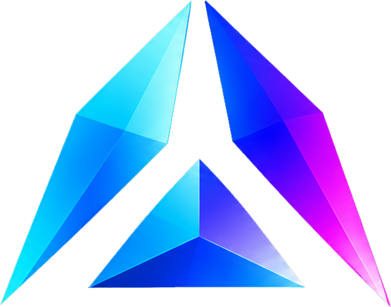

<!doctype html>
<html lang="en">
    <head>
        <meta charset="UTF-8" />
        <title>ng-prism Documentation</title>
        <meta name="description" content="Lightweight, Angular-native component showcase tool: documentation" />
        <meta name="viewport" content="width=device-width, initial-scale=1.0, minimum-scale=1.0" />
        <link rel="icon" type="image/svg+xml" href="assets/brand/ng-prism-symbol.svg" />
        <link rel="preconnect" href="https://fonts.googleapis.com" />
        <link rel="preconnect" href="https://fonts.gstatic.com" crossorigin />
        <link href="https://fonts.googleapis.com/css2?family=Inter:wght@400;500;600;700&family=JetBrains+Mono:wght@400;500&display=swap" rel="stylesheet" />
        <link rel="stylesheet" href="https://cdn.jsdelivr.net/npm/docsify-themeable@0/dist/css/theme-simple.css" />
        <style>
            :root {
                /* ng-prism dark palette (aligned with PRISM_DARK_THEME, 22.7 brand) */
                --prism-void: #050911;
                --prism-deep: #080d19;
                --prism-surface: #111827;
                --prism-elevated: #1a2335;
                --prism-primary: #60a5fa;
                --prism-primary-fill: #2563eb;
                --prism-primary-soft: #93c5fd;
                --prism-cyan: #22d3ee;
                --prism-magenta: #e879f9;
                --prism-brand-gradient: linear-gradient(90deg, #00cfea 0%, #078bfa 38%, #244bff 68%, #a20cf0 100%);
                --prism-text-primary: #f1f5f9;
                --prism-text-secondary: #cbd5e1;
                --prism-text-muted: #94a3b8;
                --prism-border: #1f2b3e;
                --prism-glow: rgba(37, 99, 235, 0.18);
                --prism-glow-strong: rgba(37, 99, 235, 0.35);

                /* Docsify theme overrides */
                --theme-color: #60a5fa;
                --base-background-color: #080d19;
                --base-color: #f1f5f9;

                --sidebar-background: #050911;
                --sidebar-nav-link-color: #cbd5e1;
                --sidebar-nav-link-color--active: #60a5fa;
                --sidebar-nav-link-color--hover: #f1f5f9;
                --sidebar-nav-link-border-color--active: #2563eb;
                --sidebar-nav-strong-color: #94a3b8;
                --sidebar-name-color: #60a5fa;
                --sidebar-width: 280px;
                --sidebar-border-color: #1f2b3e;

                --link-color: #60a5fa;
                --link-color--hover: #93c5fd;

                --heading-color: #f1f5f9;
                --heading-h2-border-color: #1f2b3e;

                --code-theme-background: #111827;
                --code-inline-background: rgba(96, 165, 250, 0.12);
                --code-inline-color: #93c5fd;

                --blockquote-border-color: #2563eb;

                --table-head-background: rgba(96, 165, 250, 0.06);
                --table-row-even-background: transparent;
                --table-row-odd-background: transparent;

                --search-background: #1a2335;
                --search-result-heading-color: #60a5fa;

                --cover-background-color: #080d19;

                --notice-tip-border-color: #60a5fa;
                --notice-important-border-color: #078bfa;

                --base-font-family: 'Inter', system-ui, -apple-system, sans-serif;
                --base-font-size: 15px;
                --base-line-height: 1.7;
                --code-font-family: 'JetBrains Mono', ui-monospace, 'Cascadia Code', monospace;
                --code-font-size: 0.875em;

                --content-max-width: 860px;
            }

            /* --------------------------------------
       Global & Body
    -------------------------------------- */
            * {
                box-sizing: border-box;
            }

            body {
                background: var(--prism-deep) !important;
                color: var(--prism-text-primary);
                -webkit-font-smoothing: antialiased;
                -moz-osx-font-smoothing: grayscale;
            }

            /* --------------------------------------
       Sidebar: spectral accent line
    -------------------------------------- */
            .sidebar {
                border-right: 1px solid var(--prism-border);
                background: var(--prism-void) !important;
            }

            /* Spectral gradient line at the top of sidebar */
            .sidebar::before {
                content: '';
                display: block;
                height: 2px;
                margin: 0 20px 16px;
                background: var(--prism-brand-gradient);
                border-radius: 1px;
                opacity: 0.5;
            }

            .sidebar .search {
                background: transparent;
                padding-left: 0 !important;
                padding-right: 0 !important;
            }

            .sidebar .app-name {
                margin-top: 0 !important;
            }

            /* Sidebar app name (logo treatment) */
            .sidebar .app-name-link {
                font-weight: 700;
                font-size: 22px;
                letter-spacing: -0.03em;
                color: var(--prism-text-primary) !important;
                padding: 0;
                display: flex;
                align-items: flex-start;
                margin-left: -12px;
            }

            /* Category headers in sidebar */
            .sidebar nav > ul > li > strong,
            .sidebar nav > ul > li > p > strong {
                display: block;
                font-size: 11px;
                font-weight: 600;
                letter-spacing: 0.08em;
                text-transform: uppercase;
                color: var(--prism-text-muted);
                margin-top: 20px;
                padding: 4px 0;
            }

            /* Sidebar links */
            .sidebar ul li a {
                font-size: 14px;
                font-weight: 400;
                padding: 5px 0;
                transition:
                    color 0.15s,
                    border-color 0.15s;
            }
            .sidebar ul li a:hover {
                text-decoration: none;
                color: var(--prism-text-primary);
            }
            .sidebar ul li.active > a {
                font-weight: 500;
                color: var(--prism-primary);
                border-right: 2px solid var(--prism-primary-fill);
            }

            /* Sidebar toggle (mobile) */
            .sidebar-toggle {
                background: var(--prism-surface) !important;
            }
            .sidebar-toggle span {
                background-color: var(--prism-text-muted) !important;
            }

            /* --------------------------------------
       Content
    -------------------------------------- */
            .content {
                padding-top: 32px;
            }

            .markdown-section {
                color: var(--prism-text-secondary);
            }

            .markdown-section h1 {
                font-size: 2rem;
                font-weight: 700;
                letter-spacing: -0.03em;
                color: var(--prism-text-primary);
                margin: 0 0 8px;
                padding: 0;
                border: none;
            }

            /* Spectral underline on h1 */
            .markdown-section h1::after {
                content: '';
                display: block;
                height: 2px;
                width: 64px;
                margin-top: 12px;
                background: var(--prism-brand-gradient);
                border-radius: 1px;
            }

            .markdown-section h2 {
                font-size: 1.35rem;
                font-weight: 600;
                letter-spacing: -0.02em;
                color: var(--prism-text-primary);
                margin: 2em 0 0.6em;
                padding-bottom: 0.4em;
                border-bottom: 1px solid rgba(96, 165, 250, 0.12);
            }

            .markdown-section h3 {
                font-size: 1.1rem;
                font-weight: 600;
                color: var(--prism-text-primary);
                margin: 1.6em 0 0.4em;
            }

            .markdown-section p,
            .markdown-section li {
                line-height: 1.75;
                color: var(--prism-text-secondary);
            }

            .markdown-section strong {
                color: var(--prism-text-primary);
                font-weight: 600;
            }

            .markdown-section a {
                text-decoration: none;
                border-bottom: 1px solid rgba(96, 165, 250, 0.3);
                transition:
                    color 0.15s,
                    border-color 0.15s;
            }
            .markdown-section a:hover {
                color: #93c5fd;
                border-bottom-color: #93c5fd;
            }

            .markdown-section hr {
                border: none;
                border-top: 1px solid var(--prism-border);
            }

            /* --------------------------------------
       Code blocks
    -------------------------------------- */
            .markdown-section pre {
                background: var(--prism-surface) !important;
                border: 1px solid var(--prism-border);
                border-radius: 8px;
                padding: 20px 24px;
                font-size: 13px;
                line-height: 1.7;
                overflow-x: auto;
            }

            .markdown-section code {
                font-family: var(--code-font-family);
                font-size: var(--code-font-size);
            }

            .markdown-section pre code {
                background: transparent !important;
                color: var(--prism-text-secondary);
            }

            .markdown-section p code,
            .markdown-section li code,
            .markdown-section td code {
                background: rgba(96, 165, 250, 0.1);
                color: #93c5fd;
                padding: 2px 6px;
                border-radius: 4px;
                font-size: 0.85em;
            }

            /* --------------------------------------
       Prism.js syntax highlighting (dark)
    -------------------------------------- */
            .token.comment,
            .token.prolog,
            .token.doctype,
            .token.cdata {
                color: #7c8ba1;
            }

            .token.punctuation {
                color: #94a3b8;
            }

            .token.property,
            .token.tag,
            .token.boolean,
            .token.number,
            .token.constant,
            .token.symbol {
                color: #e879f9;
            }

            .token.selector,
            .token.attr-name,
            .token.string,
            .token.char,
            .token.builtin {
                color: #86efac;
            }

            .token.operator,
            .token.entity,
            .token.url {
                color: #cbd5e1;
            }

            .token.atrule,
            .token.attr-value,
            .token.keyword {
                color: #93c5fd;
            }

            .token.function,
            .token.class-name {
                color: #60a5fa;
            }

            .token.regex,
            .token.important,
            .token.variable {
                color: #fbbf24;
            }

            /* --------------------------------------
       Tables
    -------------------------------------- */
            .markdown-section table {
                border-collapse: collapse;
                width: 100%;
            }
            .markdown-section table thead {
                background: rgba(96, 165, 250, 0.06);
            }
            .markdown-section table th {
                font-size: 12px;
                font-weight: 600;
                text-transform: uppercase;
                letter-spacing: 0.05em;
                color: var(--prism-text-muted);
                text-align: left;
                padding: 10px 14px;
                border-bottom: 1px solid rgba(96, 165, 250, 0.15);
            }
            .markdown-section table td {
                padding: 10px 14px;
                border-bottom: 1px solid var(--prism-border);
                font-size: 14px;
            }
            .markdown-section table tr,
            .markdown-section table tr:nth-child(2n),
            .markdown-section table tr:nth-child(2n) td {
                background: transparent;
            }
            .markdown-section table tr:hover td {
                background: rgba(96, 165, 250, 0.06);
            }

            /* --------------------------------------
       Blockquotes with a primary left border
    -------------------------------------- */
            .markdown-section blockquote {
                border-left: 3px solid var(--prism-primary-fill);
                background: rgba(96, 165, 250, 0.06);
                padding: 12px 20px;
                border-radius: 0 6px 6px 0;
                margin: 1.2em 0;
                color: var(--prism-text-secondary);
            }

            /* --------------------------------------
       Search
    -------------------------------------- */
            .search {
                border-bottom: 1px solid var(--prism-border) !important;
                padding: 12px 16px !important;
                margin: 0 !important;
            }
            .search .input-wrap {
                display: flex;
                align-items: center;
                position: relative;
                max-width: 100%;
                margin: 0 !important;
                background: transparent !important;
            }
            .search input {
                width: 100% !important;
                box-sizing: border-box !important;
                background: var(--prism-elevated) !important;
                border: 1px solid var(--prism-border) !important;
                border-radius: 8px !important;
                color: var(--prism-text-primary) !important;
                padding: 7px 12px !important;
                font-family: var(--base-font-family) !important;
                font-size: 13px !important;
                outline: none !important;
                transition:
                    border-color 0.15s,
                    box-shadow 0.15s;
            }
            .search input:focus {
                border-color: rgba(37, 99, 235, 0.4) !important;
                box-shadow: 0 0 0 3px var(--prism-glow) !important;
            }
            .search input::placeholder {
                color: var(--prism-text-muted) !important;
                font-size: 13px !important;
            }
            .search .clear-button {
                position: absolute;
                right: 6px;
                top: 50%;
                transform: translateY(-50%);
            }
            .search .clear-button svg {
                fill: var(--prism-text-muted);
            }
            .search .results-panel {
                background: var(--prism-elevated) !important;
            }

            .matching-post {
                border-bottom: 1px solid var(--prism-border) !important;
            }
            .matching-post h2 {
                color: var(--prism-primary) !important;
            }

            /* --------------------------------------
       Copy button
    -------------------------------------- */
            .docsify-copy-code-button {
                background: var(--prism-surface) !important;
                color: var(--prism-text-muted) !important;
                border: 1px solid var(--prism-border) !important;
                border-radius: 4px !important;
                font-size: 12px !important;
                font-family: var(--base-font-family) !important;
            }
            .docsify-copy-code-button:hover {
                color: var(--prism-text-primary) !important;
                border-color: rgba(96, 165, 250, 0.3) !important;
            }

            /* --------------------------------------
       GitHub corner
    -------------------------------------- */
            .github-corner svg {
                fill: #111827;
                color: #cbd5e1;
            }
            .github-corner:hover svg {
                color: #f1f5f9;
            }

            /* --------------------------------------
       Scrollbar
    -------------------------------------- */
            ::-webkit-scrollbar {
                width: 6px;
                height: 6px;
            }
            ::-webkit-scrollbar-track {
                background: transparent;
            }
            ::-webkit-scrollbar-thumb {
                background: rgba(37, 99, 235, 0.15);
                border-radius: 3px;
            }
            ::-webkit-scrollbar-thumb:hover {
                background: rgba(37, 99, 235, 0.3);
            }

            /* --------------------------------------
       Version badge, anchored to the GitHub corner
    -------------------------------------- */

            .prism-version-badge {
                position: absolute;
                top: 34px;
                right: 12px;
                padding: 2px 8px;
                font-size: 11px;
                font-weight: 600;
                font-family: var(--code-font-family);
                color: #f1f5f9 !important;
                background: #2563eb;
                border-radius: 8px;
                text-decoration: none !important;
                letter-spacing: 0.02em;
                transform: rotate(45deg);
                transform-origin: center;
                z-index: 100;
                transition: background 0.15s;
                white-space: nowrap;
                line-height: 1.4;
            }
            .prism-version-badge:hover {
                background: #60a5fa;
            }

            /* --------------------------------------
       Mobile
    -------------------------------------- */
            @media (max-width: 768px) {
                .markdown-section h1 {
                    font-size: 1.6rem;
                }
                .markdown-section h2 {
                    font-size: 1.15rem;
                }
            }

            /* 22.7 brand lockup in the sidebar: the mark plus the wordmark in the brand gradient */
            .ngp-brand {
                display: inline-flex;
                gap: 10px;
                align-items: center;
                padding: 0 14px;
            }

            .ngp-brand img {
                width: 34px;
                height: 34px;
                object-fit: contain;
            }

            .ngp-wordmark {
                font-size: 1.6rem;
                font-weight: 700;
                letter-spacing: -0.035em;
                color: transparent;
                background: var(--prism-brand-gradient);
                -webkit-background-clip: text;
                background-clip: text;
            }
        </style>
    </head>
    <body>
        <div id="app"></div>
        <script>
            window.$docsify = {
                name: '<span class="ngp-brand"><span class="ngp-wordmark">ng-prism</span></span>',
                repo: 'https://github.com/ng-prism/ng-prism',
                loadSidebar: true,
                basePath: location.hostname === 'localhost' ? '/' : '/ng-prism/',
                subMaxLevel: 3,
                auto2top: true,
                search: {
                    placeholder: 'Search docs...',
                    noData: 'No results',
                    paths: 'auto'
                },
                copyCode: {
                    buttonText: 'Copy',
                    successText: 'Copied'
                }
            };
        </script>
        <script src="https://cdn.jsdelivr.net/npm/docsify@4/lib/docsify.min.js"></script>
        <script src="https://cdn.jsdelivr.net/npm/docsify@4/lib/plugins/search.min.js"></script>
        <script src="https://cdn.jsdelivr.net/npm/docsify-copy-code@2"></script>
        <script src="https://cdn.jsdelivr.net/npm/prismjs@1/components/prism-typescript.min.js"></script>
        <script src="https://cdn.jsdelivr.net/npm/prismjs@1/components/prism-bash.min.js"></script>
        <script src="https://cdn.jsdelivr.net/npm/prismjs@1/components/prism-json.min.js"></script>
        <script>
            fetch('https://registry.npmjs.org/@ng-prism/core/latest')
                .then((r) => r.json())
                .then((d) => {
                    const poll = setInterval(() => {
                        const corner = document.querySelector('.github-corner');
                        if (!corner) return;
                        clearInterval(poll);
                        const el = document.createElement('a');
                        el.href = 'https://www.npmjs.com/package/@ng-prism/core';
                        el.target = '_blank';
                        el.textContent = 'v' + d.version;
                        el.className = 'prism-version-badge';
                        corner.appendChild(el);
                    }, 100);
                })
                .catch(() => {});
        </script>
    </body>
</html>
